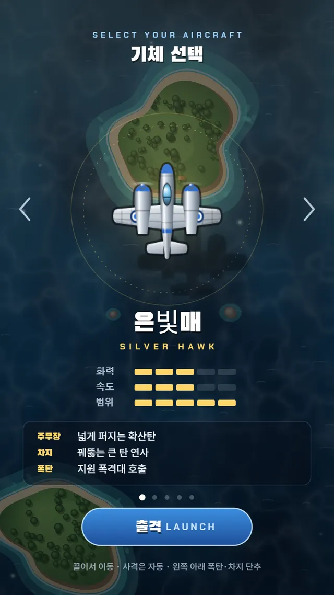
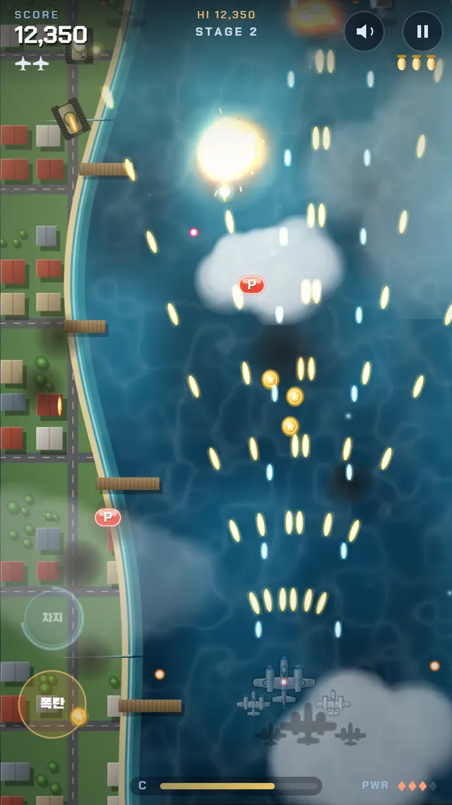
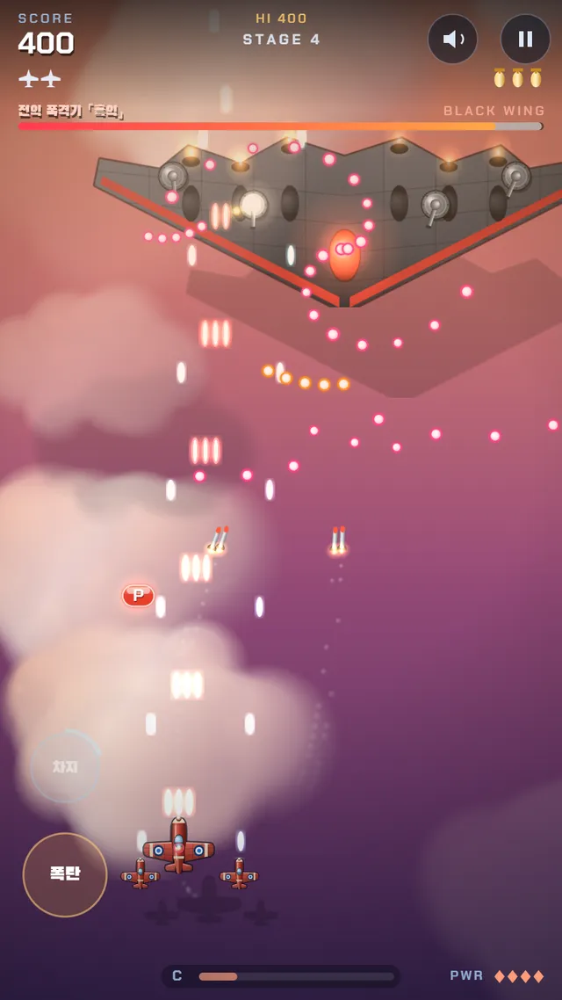
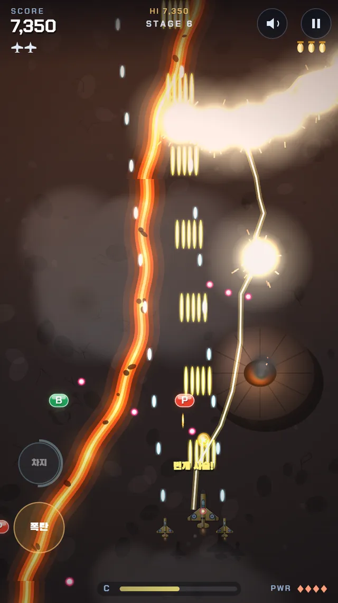

✈️ 액션 게임 · 무료 · 설치 없음
창공요격대
“천공비행단, 두 번째 작전”
- 한 바퀴 15분 안팎
- 기체 5종
- 전선 7곳
- 최고 점수 저장
회원가입 없이 누르면 바로 시작돼요
어떤 게임인가요?
천공비행단이 돌아왔어요. 이번 작전은 새벽 해협에서 출발해 항구 도시, 사막 협곡, 노을 운해, 빙하 전선, 화산 열도를 지나 밤의 흑철 요새까지 이어져요.
섬 사이로 물결이 반짝이고, 구름 아래로 비행기 그림자가 지나가요. 전선마다 「WARNING」 경고와 함께 거대 비행정, 초대형 전함, 화염 폭격기 같은 보스가 나타나요. 포탑을 하나씩 부수고 붉게 빛나는 약점을 노려 보세요.
적을 맞힐수록 차지 게이지가 차고, 가득 차면 기체마다 다른 필살 공격을 쓸 수 있어요. 금빛 훈장을 연달아 모으면 점수가 점점 커져요.
이렇게 해요
- STEP 1
기체를 골라요
은빛매·푸른창·붉은여우·철갑곰·금빛번개. 기체마다 주무장, 차지 공격, 폭탄이 달라요.
- STEP 2
끌어서 움직여요
화면 아무 곳이나 손가락으로 끌면 기체가 따라와요. 사격은 자동이에요.
- STEP 3
차지와 폭탄
게이지가 차면 「차지」, 위급할 땐 「폭탄」 단추! 폭탄은 적탄을 한 번에 지워요.



🛩️ 다섯 기체
- 은빛매 — 넓게 퍼지는 확산탄, 지원 폭격대 호출
- 푸른창 — 좁고 강한 창탄, 차지하면 거대 광선
- 붉은여우 — 기관포와 유도 미사일, 폭탄은 적탄을 막는 방패막
- 철갑곰 — 가까울수록 강한 부채꼴 산탄
- 금빛번개 — 적을 꿰뚫는 연속 광선탄, 차지하면 번개 사슬
- P는 화력 강화(4단), B는 폭탄, 금빛 훈장은 보너스 점수. 빨간 기체를 잡으면 P가 나와요.
이런 분께 추천해요
- 옛날 오락실 슈팅 게임이 그리운 분
- 「천공비행단 1945」를 끝까지 깬 분
- 짧고 화끈하게 최고 점수를 겨루고 싶은 친구·가족
처음이라면 붉은여우를 골라 보세요. 유도 미사일이 알아서 적을 쫓아가요. 화력이 세지면 양옆에 호위기 두 대가 따라붙어요.
📱 어떤 기기에서 하면 좋을까요?
- 가장 좋아요휴대폰 세로로
세로 화면에 맞춘 게임이에요. 엄지로 끌어 움직이고, 왼쪽 아래 「폭탄」「차지」 단추를 눌러요. 가로로 들면 「세로로 돌려 주세요」 안내가 떠요.
- 좋아요컴퓨터·노트북 키보드
방향키나 WASD로 움직이고 X 폭탄, C 차지, P 일시정지, M 소리. Shift를 누르면 천천히 움직여요.
- 좋아요태블릿 세로로
화면이 커서 적탄이 잘 보여요. 세로로 들어 주세요. 가로로 두면 게임 화면이 가운데에 작게 떠요.
오른쪽 위 메뉴(⋮ 또는 ···)에서 「다른 브라우저로 열기」를 눌러 크롬이나 사파리로 열어 주세요. 앱 안에서는 전체 화면이 안 되고 저장이 풀릴 수 있어요.
🍎 아이폰·아이패드에서는
- ① 사파리로 열고 세로로
주소를 사파리에서 열어 세로로 들어 주세요.
- ② 홈 화면에 추가하기
아이폰에서는 전체 화면이 되지 않아요. 공유 버튼(□↑) → 「홈 화면에 추가」로 열면 주소창 없이 꽉 찬 화면으로 즐길 수 있어요.
- ③ 소리
화면을 처음 누르면 음악이 나와요. 무음 스위치가 켜져 있으면 소리가 나지 않아요. 오른쪽 위 🔊 단추로 끌 수 있어요.
- ④ 최고 점수
최고 점수와 소리 설정은 그 기기에 저장돼요.
🤖 갤럭시 등 안드로이드에서는
크롬이나 삼성 인터넷으로 열고 첫 화면을 누르면 꽉 찬 화면이 돼요. 메뉴(⋮)에서 「홈 화면에 추가」를 해 두면 편해요.
▶ 바로 해 보기
설치도, 회원가입도 필요 없어요.
창공요격대 시작하기game.edoori.co.kr/azurewing/